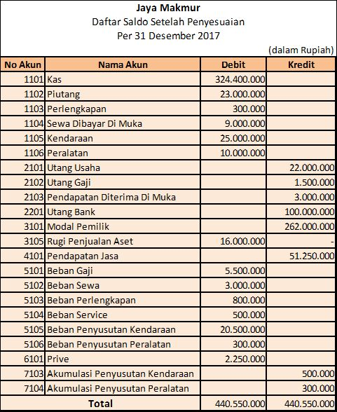

Jurnal penyesuaian diperlukan untuk menyesuaikan akun-akun yang tidak menunjukkan saldo yang sebenarnya. Beberapa hal berikut ini mungkin dapat membantu pemahaman anda:
Diharapkan dengan melakukan pencatatanpenyesuaian, laporan keuangan yang dihasilkan benar-benar menyajikan informasi yang akurat dapat dipercaya, diandalkan, dan dapat menggambarkan keadaan yang sebenarnya. Beberapa transaksi yang memerlukan jurnal penyesuaian adalah sebagai berikut:
Transaksi apa sajakah yang memerlukan jurnal penyesuaian?
Berikut ini adalah daftar saldo setelah penyesuaian "Jaya Makmur"
